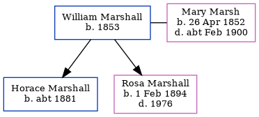

William George Horace Marshall 1853 -
[ Home ] | [ Calendar ] | [ Surnames Index ] | [ Errors ] | [ Family History ]William Marshall, the husband of Mary Ann Harriet Marsh (the first cousin three-times-removed on the mother's side of Nigel Horne), was born in Teynham, Kent, England in 18531,2 and married Mary (with whom he had 2 children: Horace George and Rosa Louise) in Faversham, Kent, England on 1 Jan 18813. On 3 Apr 1881, he was living at 40 Preston Street in Faversham1.
Children
- Horace George was born c. 1881
- Rosa Louise was born on 1 Feb 1894
Citations
- 1881 England, Wales & Scotland Census - Findmypast (was age 28 and the head of the household)
- England Marriages 1538-1973 - Findmypast
- England & Wales Marriages 1837-2005 - Findmypast
Media
William George Horace Marshall - Mary Ann Marsh - Marriage Certificate

Family Tree
Map
Generated by ged2site. Last updated on Jul 3, 2024